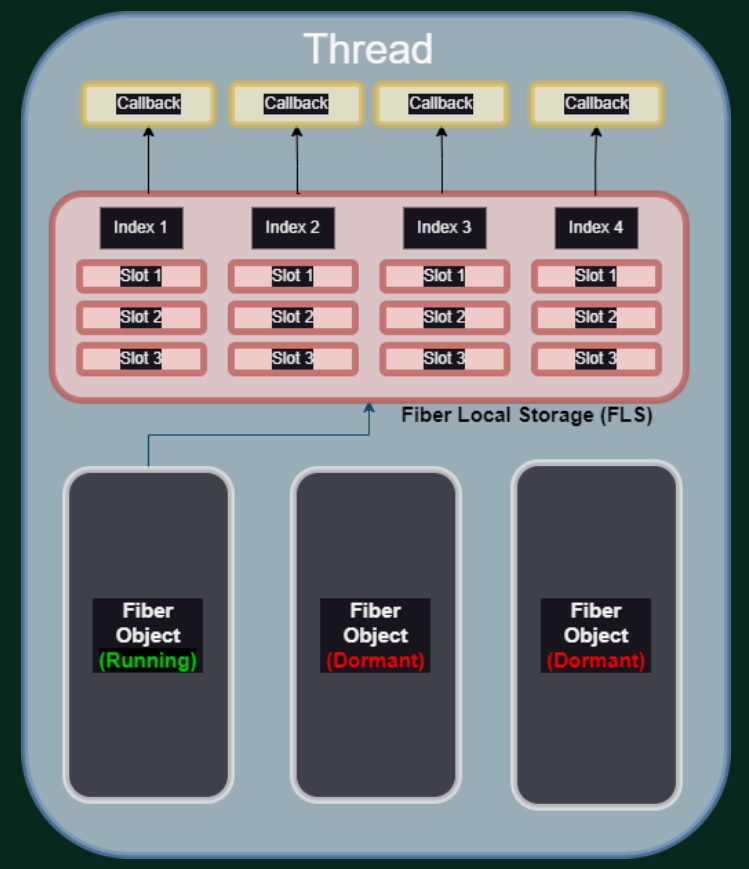
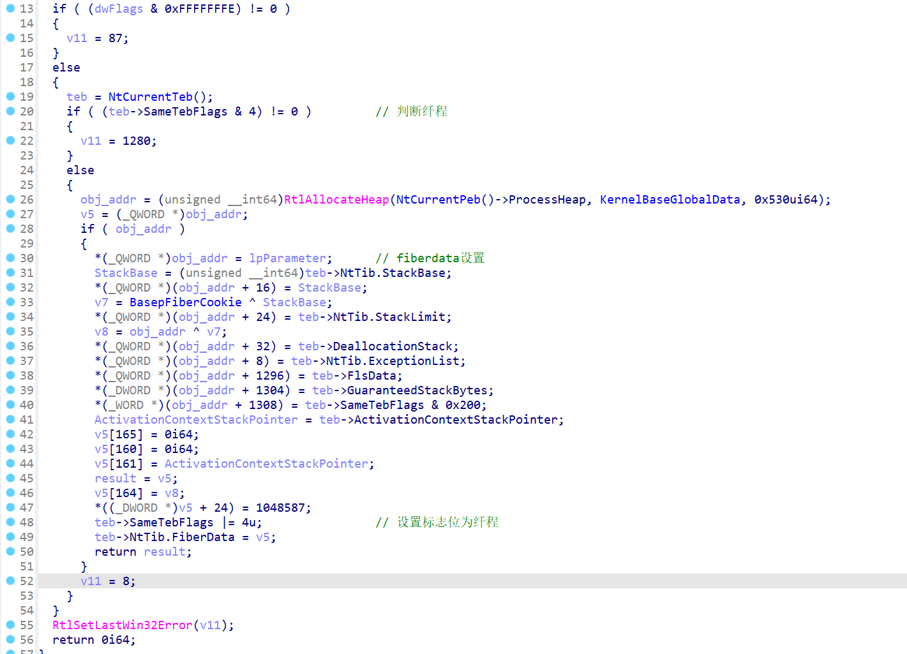
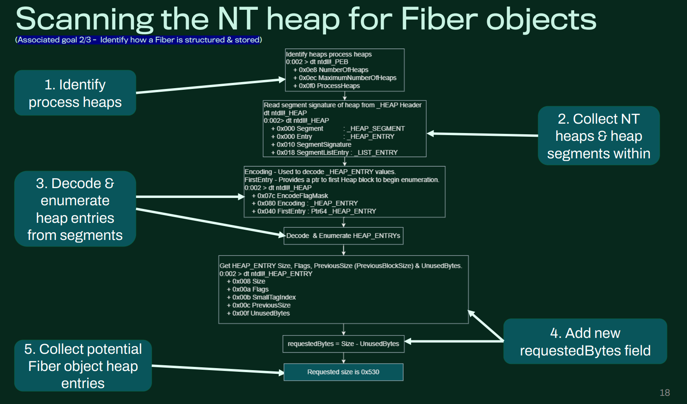
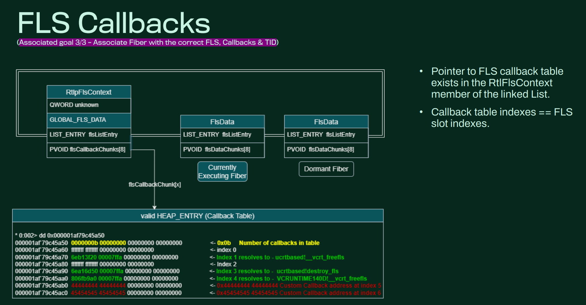

纤程学习
前阵子看到的一篇slides，感觉挺有意思，记录下学习过程。
From Dead Data to Digestion
Fibers
轻量级纤程
1 | |
每个纤程用户态存在一个fiber objects用来描述纤程
1 | |

使用
1 | |
针对恶意代码的执行有俩种方式
1 | |
一种是直接分配内存后让其执行，shellcode作为参数传递，另一种是通过设置FLS回调函数来实现。
优势&劣势
目前内核针对用户态的监控还没有纤程的只有线程，如PsSetCreateThreadNotifyRoutine。所以可以通过纤程来进行注入。
但是纤程不像线程有成熟的api可以调用比如createremotethread且有关的文档很少，基本没有讲过其internal的，也没有一些开源的工具。
fiber原理与实现
后续作者讲解了纤程的本质与实现。
用户态存在api IsThreadAFiber来判断当前线程是否为纤程
主要是通过判断teb的SameTebFlags标志位来实现。
这个api没有远程的实现，想要远程实现可以通过CreateToolhelp32Snapshot(TH32CS_SNAPTHREAD, 0) 首先获取所有的线程id然后OpenThread() + NtQueryInformationThread()获取teb的基址后续就是ReadProcessMemory()读取标志位来判断是否为纤程
接着是纤程的data位于TEB.NT_TIB.FiberData
这部分是由函数ConvertThreadToFiber来实现

知道了fiber object如何构造我们也可以自己来实现了。
关于检测这块，作者提到了遍历heap来实现，因为fiber的object固定大小为0x530

获取到结构体后可以根据结构体的内容获取到双向链表，目标线程的所有纤程结构体
还能用于判断纤程是否为挂起
至此我们可以获取到与线程相关的所有纤程结构体
接着我们可以进一步获取fls里的所有内容通过分析RtlFlsGetValue
然后就能进一步分析获取所有的FLS回调函数。
思考
考虑到纯用户态实现+没有内核回调函数，是否可以通过人工实现远程纤程注入？
检测方法可以通过看有没有改写teb来实现
验证
1.强行设置纤程
teb+0x17ee处存在flag标志位
teb->SameTebFlags |= 4u即可
2.回调函数设置
结构体位于ntdll.dll+184E50
struct _RTLP_FLS_CONTEXT RtlpFlsContext
其中偏移处+8是GLOBAL_FLS_DATA

设置对应的number和回调函数即可
FlsSetValue函数主要是为其添加参数，参数位于
fiberdata=teb+0x20
flsdata=fiberdata+0x510
flsdata处存储了其对应的参数,这个必须要设置不然不会执行。
参考资料
blackhat USA 2023(From Dead Data to Digestion Extracting Windows Fibers for your digital forensics diet)